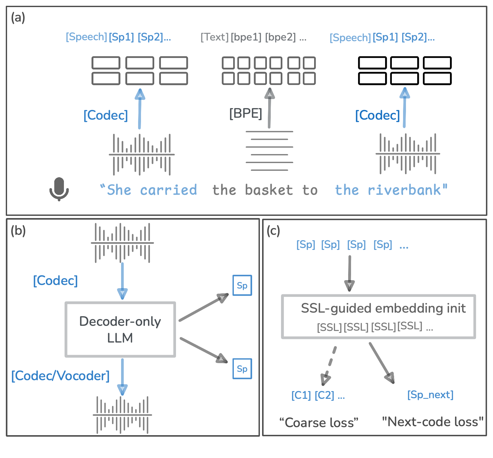

We study speech language models that incorporate semantic initialization and planning losses to achieve robust and consistent generation. Our approach initializes speech tokens with self-supervised features, applies a light alignment loss, and trains with thinning and auxiliary objectives that target robustness and content planning. We train three models: a 0.7B speech-only model, a 1.0B speech-only model, and a 1.0B interleaved model with both text and speech. Acoustic studies show that the speech-only models achieve the highest consistency across speaker, gender, sentiment, room, and background factors, surpassing larger systems. Interleaving improves lexical and syntactic probes and semantic–acoustic alignment but reduces consistency. Linear probes show that our initialization biases the model toward content structure while trading off prosody detail. These results show that LM-side design and training mix control the balance between acoustic stability and semantic grounding without changes to the tokenizer or runtime architecture.

Interleaved Examples
Examples from the interleaved expressive model, using the same prompts and audio from the TinyWave demo.
Audio-to-Audio Examples
Prompt, resynthesis, and generated continuation examples from the CAST speech-to-speech model.